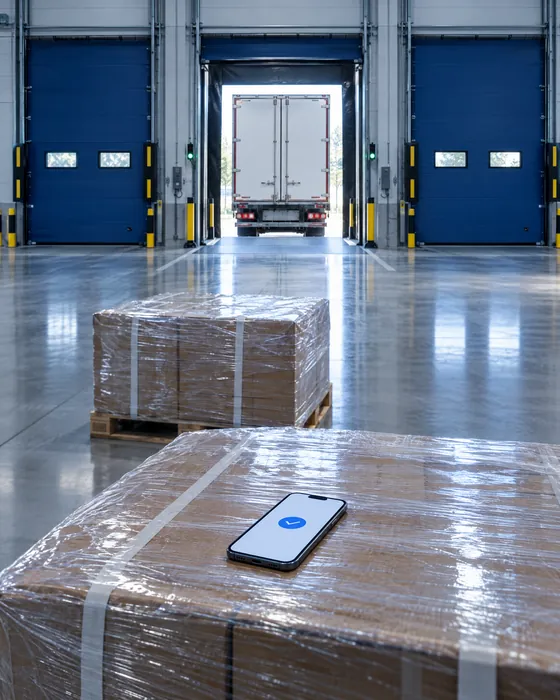
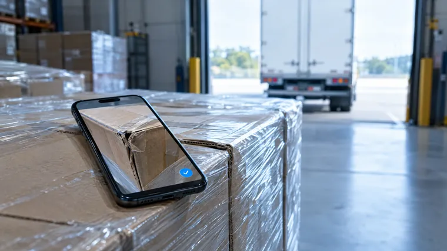

Wat er toen was, staat vast.
Leveringen, foto's, metingen en documenten. Vidimus verzegelt ze op het moment zelf. Niemand kan ze nog ongemerkt veranderen, ook wij niet.
De eerste 100 registraties per maand zijn gratis. Geen betaalgegevens nodig. Of vervals eerst zelf een vrachtbrief →


- Gekwalificeerde tijdstempel (eIDAS)
- Na te rekenen met de software van de Europese Commissie
- Ook verankerd in Bitcoin
- Servers in de EU
Het probleemKan uw systeem achteraf bewijzen wat er stond?
De klant zegt 23 paletten. U zegt 26. Zonder bewijs dat niemand kan aanvechten, betaalt u: de creditnota, de uren van uw planner, soms de klant.
OnafhankelijkheidDe audit trail zit in hetzelfde systeem als de gegevens.Een cryptografische verankering buiten uw systeem.
ZO GAAT HET VAAKDe tegenpartij zegt: “Dat is uw eigen systeem, daar kan u alles in aanpassen.” Uw audit trail is waardevol, maar staat in datzelfde systeem.
Bewijs delenUw tegenpartij moet uw systeem op uw woord geloven.Een bewijs dat zij zelf controleert, zonder account.
ZO GAAT HET VAAKU stuurt een export of een schermafdruk. Het antwoord: “Dat kan iedereen maken.” Toegang tot uw systeem om het na te kijken heeft uw klant niet, en die wilt u ook niet geven.
Meerdere systemenTMS, WMS, sensoren, foto's en ERP loggen elk apart.Eén bewijslaag over al die registraties.
ZO GAAT HET VAAKDe levering staat in het TMS, de foto's in een gedeelde map, de temperatuur in een sensorportaal. Bij een claim puzzelt iemand dagenlang om er één verhaal van te maken.
SensormetingenEen meetwaarde wordt weken later betwist.De verankerde registratie van wat de sensor doorstuurde.
ZO GAAT HET VAAKEen klant weigert een lading: de koeling zou uitgevallen zijn. Uw logger zegt van niet, maar de grafiek komt uit uw eigen portaal, en daar twijfelt de klant aan.
AuditDe auditor moet het bewijs uit exports reconstrueren.Een bewijsbundel die hij zelf narekent.
ZO GAAT HET VAAKElk jaar dezelfde oefening voor ISO, FAVV of een klantaudit: exports uit drie systemen, steekproeven, en de vraag of er intussen niets werd aangepast.
KmoEigen onveranderbare infrastructuur bouwen is duur.Een dienst met API en app, gratis te starten.
ZO GAAT HET VAAKEen eigen onveranderbaar archief of een blockchainproject kost maanden en een IT-team. Dus blijft het bij pdf's, mails en goede hoop.
Discussies"Welke versie klopt?"De registratie zoals ze op dat tijdstip werd vastgelegd.
ZO GAAT HET VAAKTwee versies van dezelfde vrachtbrief, inspectie of goedkeuring, en iedereen is zeker van de zijne. Het gesprek gaat dan niet meer over de feiten, maar over wie u gelooft.
Vervals het.
Pas het aantal paletten op deze vrachtbrief aan en kijk wat er met het bewijs gebeurt. Alles wordt live in uw browser berekend.
Aflevering — CMR
Kaai 913, Antwerpen · getekend door chauffeur en ontvanger, elk op eigen toestel
- Afzender
- Verhelst Transport BV
- Ontvanger
- Nova Logistics NV
- Colli
- 26 paletten · zonder voorbehoud
- Afgeleverd
- 4 september 2026 — 15:12
- Plaats · toestel
- 51.2302 N · 4.4160 E · ±6 m
of klik zelf op een waarde en typ, zoals iemand dat weken later zou proberen
voorbeeld · fictieve registratie
KLOPT
Dit is exact wat op 4 september om 15:13 werd vastgelegd, getekend door chauffeur én ontvanger.
- Vastgelegd
- 4 september 2026 · 15:13:22 (UTC)
- Tijdstempel
- onafhankelijk bij verankering · gekwalificeerd (eIDAS) binnen 6 uur
- Anker
berekenen…- Huidige inhoud
berekenen…
DE CONTROLES6 × klopt+
De sha-256 over de vijf velden is exact de vingerafdruk in het anker. Dezelfde bytes geven dezelfde 64 tekens; een andere inhoud met dezelfde vingerafdruk vinden is met SHA-256 praktisch onmogelijk.
De vijf velden geven nu een andere vingerafdruk dan het anker. Eén teken verschil, 26 → 23, en de hele hash verandert. Welk veld? Zie hierboven in blauw: {velden}.
De Ed25519-handtekening klopt bij de vingerafdruk én bij de sleutel die op het toestel van de chauffeur staat. Die sleutel verlaat het toestel nooit.
De handtekening hoort bij de oorspronkelijke vingerafdruk, niet bij deze inhoud. Wie de tekst wijzigt, heeft geen handtekening van de chauffeur over de nieuwe tekst.
Ook de ontvanger tekende dezelfde vingerafdruk, met een eigen sleutel op een eigen toestel. Twee partijen, één inhoud.
De ontvanger tekende de oorspronkelijke inhoud. Deze gewijzigde versie is door niemand getekend.
Een externe tijdstempeldienst tekende de batchwortel op 04.09.2026 15:13:22Z. Binnen zes uur bevestigde een erkende, gekwalificeerde vertrouwensdienst ze (eIDAS). Dat moment kan niemand verplaatsen, ook Vidimus niet.
Het tijdstempel geldt voor de wortel waarin de oorspronkelijke vingerafdruk zit. Voor deze inhoud bestaat geen tijdstempel.
Via het Merkle-pad is herrekend dat deze vingerafdruk in de verankerde wortel zit. Dat lukt alleen met exact deze vingerafdruk.
Met een andere vingerafdruk komt het Merkle-pad niet meer uit op de wortel. De inhoud zit dus niet in de verankerde batch.
De wortel staat in het grootboek en elk record hasht het vorige. Eén record aanpassen breekt de hele keten erna.
Het grootboek kent alleen de oorspronkelijke wortel. Deze inhoud komt nergens in de keten voor.
De vingerafdruk komt overeen met het anker. U ziet wat er vastligt: het moment volgens de onafhankelijke tijdstempel, wie tekende, de plaats volgens het toestel.
Deze inhoud komt met geen enkel anker overeen. Meer zegt Vidimus niet: niet wat er veranderde, niet door wie. Er bestaat geen "lijkt op".
Zo eindigt de discussie over 23 of 26 paletten: niet bij wie de mooiste pdf heeft, maar bij één controle die iedereen zelf doet. Vidimus oordeelt niet, het vergelijkt, op een controlepagina die uw klant opent zonder account en zonder ons te moeten geloven.
Zo werkt het.
- 1Registreren
In de app met foto, plaats en handtekening. Of vanuit uw TMS, WMS, ERP of sensoren.
- 2Verzegelen
Op dat moment, met een onafhankelijke tijdstempel. Niet door u, niet door ons.
- 3Controleren
Uw klant, verzekeraar of rechter controleert het zelf. Zonder account, zonder ons.
Hoe registreert u?

Wat kost woord tegen woord u?
Vul uw eigen cijfers in. Er wordt niets verstuurd.
Privé — alles wordt in uw browser berekend. Er wordt niets opgeslagen, verstuurd of bijgehouden.
Ter vergelijking: 150 registraties per maand kosten € 19 — en van elke verankerde registratie staan inhoud, bron en moment vast.
Gratis beginnen. Betalen per gebruik.
- Gratisde eerste 100 registraties per maand
- € 0,08per registratie daarna, minder bij grote aantallen
- € 15per sensor per maand, metingen onbeperkt
| 80 registraties | € 0 |
|---|---|
| 300 registraties | € 19 |
| 1 000 registraties | € 72 |
| 1 000 registraties en 3 sensoren | € 102 |
Zodra u iets betaalt, is het minstens € 19 per maand. Met een jaarcontract betaalt u 10 maanden voor 12. Prijzen excl. btw.
Tien foto's van dezelfde levering, met de handtekening erbij, zijn samen één registratie.
Bereken uw prijsWat u wil weten.
Aanvaardt een rechter dit?
De rechter weegt elk bewijs vrij. Een gekwalificeerde tijdstempel krijgt in de hele EU het vermoeden dat datum en tijd juist zijn (eIDAS, art. 41). Vidimus toont wat er vastlag; wie gelijk heeft, beslist de rechter.
Wat als Vidimus stopt?
Uw bewijs blijft werken. Elke bewijsbundel controleert u zonder ons, met een klein script of met de software van de Europese Commissie. Bij stopzetting hebt u negentig dagen om alles mee te nemen.
Kan Vidimus mijn gegevens lezen?
Alles staat versleuteld, op servers in de EU. Kiest u een vertrouwelijke stroom, dan versleutelt de telefoon of uw systeem alles vóór het verzenden en hebt alleen u de sleutel. Dan ziet ook Vidimus niets.
Moet ik mijn software vervangen?
Nee. Uw TMS, WMS of ERP blijft de bron. Vidimus verzegelt de registraties die ertoe doen, via de app of een koppeling. Die koppeling doet uw leverancier of een AI-agent met één instructie.
Wat telt als één registratie?
Eén vastgelegd moment: een levering, foto, inspectie of document. Tien foto's van dezelfde levering, met de handtekening erbij, zijn samen één registratie. Metingen van een sensor tellen niet apart.

"Wij tekenen met naam en gezicht voor wat we bouwen. U belt niet met een supportdesk — u belt met wie het gebouwd heeft."
En als wij er niet zijn? Het bewijs hangt niet aan ons: elke bundel is zonder Vidimus te controleren, back-ups gaan elke nacht versleuteld naar opslag met Object Lock, en bij stopzetting hebt u negentig dagen om alles mee te nemen. Antwoord binnen één werkdag is standaard; een SLA met gegarandeerde reactietijden kan bij jaarcontract.
Elke start persoonlijk opgevolgd, van eerste koppeling tot eerste anker
Begin met
wat u nooit meer wil betwisten.
Uw eerste stroom staat in drie minuten, zonder betaalgegevens.